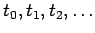

Inhalt Index DeskTop Bronstein

 Wahrscheinlichkeitsrechnung und Mathematische Statistik Wahrscheinlichkeitsrechnung Stochastische Prozesse und stochastische Ketten Poisson-Prozesse
Wahrscheinlichkeitsrechnung und Mathematische Statistik Wahrscheinlichkeitsrechnung Stochastische Prozesse und stochastische Ketten Poisson-Prozesse


Bei den stochastischen Ketten sind sowohl der Zustandsraum Z als auch der Parameterraum T diskret, d.h., der stochastische Prozeß wurde nur zu den diskreten Zeitpunkten  betrachtet. Beim POISSON-Prozeß wird dagegen ein stetiger Parameterraum T vorausgesetzt.
Die Größe  heißt hier Übergangsrate.
heißt hier Übergangsrate.
| Beispiel C |
|
Bei Zuverlässigkeitsuntersuchungen wird die wahrscheinliche Anzahl der Ausfälle eines reparierbaren Systems während der Betriebsdauer berechnet. |
| Beispiel D |
|
In der Bedienungstheorie wird die Anzahl der bis zur Zeit t eintreffenden Kunden an einer Kaufhauskasse, einem Fahrkartenschalter oder einer Tankstelle betrachtet. |